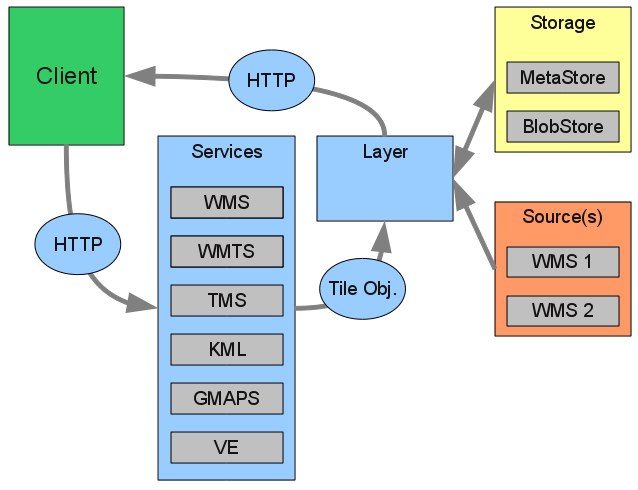

Architecture¶
Both of the diagrams below are greatly simplified. They are only meant to inform end users, developers should consult the Spring context and the source code.
Overview¶
(TODO)
Request Processing¶

Previous: What Is GeoWebCache?
Next: Community